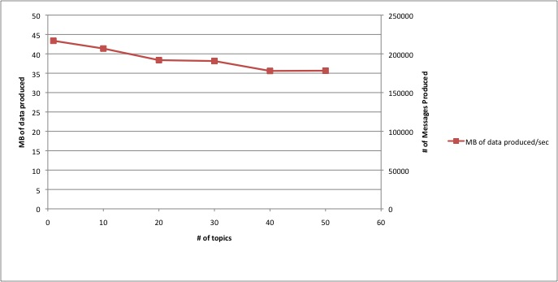

Documentation
Kafka 0.7
- Quickstart – Get up and running quickly.
- Configuration – All the knobs.
- Performance – Some performance results.
- Operations – Notes on running the system.
- API Docs – Scaladoc for the api.
Quick Start
Step 1: Download the code
Download a recent stable release.> tar xzf kafka-<VERSION>.tgz > cd kafka-<VERSION> > ./sbt update > ./sbt package
Step 2: Start the server
Kafka brokers and consumers use this for co-ordination.First start the zookeeper server. You can use the convenience script packaged with kafka to get a quick-and-dirty single-node zookeeper instance.
> bin/zookeeper-server-start.sh config/zookeeper.properties [2010-11-21 23:45:02,335] INFO Reading configuration from: config/zookeeper.properties ...Now start the Kafka server:
> bin/kafka-server-start.sh config/server.properties jkreps-mn-2:kafka-trunk jkreps$ bin/kafka-server-start.sh config/server.properties [2010-11-21 23:51:39,608] INFO starting log cleaner every 60000 ms (kafka.log.LogManager) [2010-11-21 23:51:39,628] INFO connecting to ZK: localhost:2181 (kafka.server.KafkaZooKeeper) ...
Step 3: Send some messages
Kafka comes with a command line client that will take input from standard in and send it out as messages to the Kafka cluster. By default each line will be sent as a separate message. The topic test is created automatically when messages are sent to it. Omitting logging you should see something like this:> bin/kafka-console-producer.sh --zookeeper localhost:2181 --topic test This is a message This is another message
Step 4: Start a consumer
Kafka also has a command line consumer that will dump out messages to standard out.> bin/kafka-console-consumer.sh --zookeeper localhost:2181 --topic test --from-beginning This is a message This is another message
If you have each of the above commands running in a different terminal then you should now be able to type messages into the producer terminal and see them appear in the consumer terminal.
Both of these command line tools have additional options. Running the command with no arguments will display usage information documenting them in more detail.
Step 5: Write some code
Below is some very simple examples of using Kafka for sending messages, more complete examples can be found in the Kafka source code in the examples/ directory.Producer Code
Producer API
Here are examples of using the producer API -kafka.producer.Producer<T> -
- First, start a local instance of the zookeeper server
./bin/zookeeper-server-start.sh config/zookeeper.properties
- Next, start a kafka broker
./bin/kafka-server-start.sh config/server.properties
- Now, create the producer with all configuration defaults and use zookeeper based broker discovery.
import java.util.Arrays; import java.util.List; import java.util.Properties; import kafka.javaapi.producer.SyncProducer; import kafka.javaapi.message.ByteBufferMessageSet; import kafka.message.Message; import kafka.producer.SyncProducerConfig; ... Properties props = new Properties(); props.put(“zk.connect”, “127.0.0.1:2181”); props.put("serializer.class", "kafka.serializer.StringEncoder"); ProducerConfig config = new ProducerConfig(props); Producer<String, String> producer = new Producer<String, String>(config); - Send a single message
// The message is sent to a randomly selected partition registered in ZK ProducerData<String, String> data = new ProducerData<String, String>("test-topic", "test-message"); producer.send(data); - Send multiple messages to multiple topics in one request
List<String> messages = new java.util.ArrayList<String>(); messages.add("test-message1"); messages.add("test-message2"); ProducerData<String, String> data1 = new ProducerData<String, String>("test-topic1", messages); ProducerData<String, String> data2 = new ProducerData<String, String>("test-topic2", messages); List<ProducerData<String, String>> dataForMultipleTopics = new ArrayList<ProducerData<String, String>>(); dataForMultipleTopics.add(data1); dataForMultipleTopics.add(data2); producer.send(dataForMultipleTopics); - Send a message with a partition key. Messages with the same key are sent to the same partition
ProducerData<String, String> data = new ProducerData<String, String>("test-topic", "test-key", "test-message"); producer.send(data); - Use your custom partitioner
If you are using zookeeper based broker discovery,
kafka.producer.Producer<T>routes your data to a particular broker partition based on akafka.producer.Partitioner<T>, specified through thepartitioner.classconfig parameter. It defaults tokafka.producer.DefaultPartitioner. If you don't supply a partition key, then it sends each request to a random broker partition.class MemberIdPartitioner extends Partitioner[MemberIdLocation] { def partition(data: MemberIdLocation, numPartitions: Int): Int = { (data.location.hashCode % numPartitions) } } // create the producer config to plug in the above partitioner Properties props = new Properties(); props.put(“zk.connect”, “127.0.0.1:2181”); props.put("serializer.class", "kafka.serializer.StringEncoder"); props.put("partitioner.class", "xyz.MemberIdPartitioner"); ProducerConfig config = new ProducerConfig(props); Producer<String, String> producer = new Producer<String, String>(config); - Use custom Encoder
The producer takes in a required config parameter
serializer.classthat specifies anEncoder<T>to convert T to a Kafka Message. Default is the no-op kafka.serializer.DefaultEncoder. Here is an example of a custom Encoder -class TrackingDataSerializer extends Encoder<TrackingData> { // Say you want to use your own custom Avro encoding CustomAvroEncoder avroEncoder = new CustomAvroEncoder(); def toMessage(event: TrackingData):Message = { new Message(avroEncoder.getBytes(event)); } }If you want to use the above Encoder, pass it in to the "serializer.class" config parameterProperties props = new Properties(); props.put("serializer.class", "xyz.TrackingDataSerializer"); - Using static list of brokers, instead of zookeeper based broker discovery
Some applications would rather not depend on zookeeper. In that case, the config parameter
broker.listcan be used to specify the list of all brokers in the Kafka cluster.- the list of all brokers in your Kafka cluster in the following format -broker_id1:host1:port1, broker_id2:host2:port2...// you can stop the zookeeper instance as it is no longer required ./bin/zookeeper-server-stop.sh // create the producer config object Properties props = new Properties(); props.put(“broker.list”, “0:localhost:9092”); props.put("serializer.class", "kafka.serializer.StringEncoder"); ProducerConfig config = new ProducerConfig(props); // send a message using default partitioner Producer<String, String> producer = new Producer<String, String>(config); List<String> messages = new java.util.ArrayList<String>(); messages.add("test-message"); ProducerData<String, String> data = new ProducerData<String, String>("test-topic", messages); producer.send(data); - Use the asynchronous producer along with GZIP compression. This buffers writes in memory until either
batch.sizeorqueue.timeis reached. After that, data is sent to the Kafka brokersProperties props = new Properties(); props.put("zk.connect"‚ "127.0.0.1:2181"); props.put("serializer.class", "kafka.serializer.StringEncoder"); props.put("producer.type", "async"); props.put("compression.codec", "1"); ProducerConfig config = new ProducerConfig(props); Producer<String, String> producer = new Producer<String, String>(config); ProducerData<String, String> data = new ProducerData<String, String>("test-topic", "test-message"); producer.send(data); - Finally, the producer should be closed, through
producer.close();
Log4j appender
Data can also be produced to a Kafka server in the form of a log4j appender. In this way, minimal code needs to be written in order to send some data across to the Kafka server. Here is an example of how to use the Kafka Log4j appender - Start by defining the Kafka appender in your log4j.properties file.// define the kafka log4j appender config parameters log4j.appender.KAFKA=kafka.producer.KafkaLog4jAppender // REQUIRED: set the hostname of the kafka server log4j.appender.KAFKA.Host=localhost // REQUIRED: set the port on which the Kafka server is listening for connections log4j.appender.KAFKA.Port=9092 // REQUIRED: the topic under which the logger messages are to be posted log4j.appender.KAFKA.Topic=test // the serializer to be used to turn an object into a Kafka message. Defaults to kafka.producer.DefaultStringEncoder log4j.appender.KAFKA.Serializer=kafka.test.AppenderStringSerializer // do not set the above KAFKA appender as the root appender log4j.rootLogger=INFO // set the logger for your package to be the KAFKA appender log4j.logger.your.test.package=INFO, KAFKAData can be sent using a log4j appender as follows -
Logger logger = Logger.getLogger([your.test.class])
logger.info("message from log4j appender");
If your log4j appender fails to send messages, please verify that the correct
log4j properties file is being used. You can add
-Dlog4j.debug=true to your VM parameters to verify this.
Consumer Code
The consumer code is slightly more complex as it enables multithreaded consumption:
// specify some consumer properties
Properties props = new Properties();
props.put("zk.connect", "localhost:2181");
props.put("zk.connectiontimeout.ms", "1000000");
props.put("groupid", "test_group");
// Create the connection to the cluster
ConsumerConfig consumerConfig = new ConsumerConfig(props);
ConsumerConnector consumerConnector = Consumer.createJavaConsumerConnector(consumerConfig);
// create 4 partitions of the stream for topic “test”, to allow 4 threads to consume
Map<String, List<KafkaStream<Message>>> topicMessageStreams =
consumerConnector.createMessageStreams(ImmutableMap.of("test", 4));
List<KafkaStream<Message>> streams = topicMessageStreams.get("test");
// create list of 4 threads to consume from each of the partitions
ExecutorService executor = Executors.newFixedThreadPool(4);
// consume the messages in the threads
for(final KafkaStream<Message> stream: streams) {
executor.submit(new Runnable() {
public void run() {
for(MessageAndMetadata msgAndMetadata: stream) {
// process message (msgAndMetadata.message())
}
}
});
}
Hadoop Consumer
Providing a horizontally scalable solution for aggregating and loading data into Hadoop was one of our basic use cases. To support this use case, we provide a Hadoop-based consumer which spawns off many map tasks to pull data from the Kafka cluster in parallel. This provides extremely fast pull-based Hadoop data load capabilities (we were able to fully saturate the network with only a handful of Kafka servers).
Usage information on the hadoop consumer can be found here.
Simple Consumer
Kafka has a lower-level consumer api for reading message chunks directly from servers. Under most circumstances this should not be needed. But just in case, it's usage is as follows:
import kafka.api.FetchRequest;
import kafka.javaapi.consumer.SimpleConsumer;
import kafka.javaapi.message.ByteBufferMessageSet;
import kafka.message.Message;
import kafka.message.MessageSet;
import kafka.utils.Utils;
...
// create a consumer to connect to the kafka server running on localhost, port 9092, socket timeout of 10 secs, socket receive buffer of ~1MB
SimpleConsumer consumer = new SimpleConsumer("127.0.0.1", 9092, 10000, 1024000);
long offset = 0;
while (true) {
// create a fetch request for topic “test”, partition 0, current offset, and fetch size of 1MB
FetchRequest fetchRequest = new FetchRequest("test", 0, offset, 1000000);
// get the message set from the consumer and print them out
ByteBufferMessageSet messages = consumer.fetch(fetchRequest);
for(MessageAndOffset msg : messages) {
System.out.println("consumed: " + Utils.toString(msg.message.payload(), "UTF-8"));
// advance the offset after consuming each message
offset = msg.offset;
}
}
Configuration
Important configuration properties for Kafka broker:
More details about server configuration can be found in the scala class kafka.server.KafkaConfig.
| name | default | description |
|---|---|---|
brokerid |
none | Each broker is uniquely identified by an id. This id serves as the brokers "name", and allows the broker to be moved to a different host/port without confusing consumers. |
enable.zookeeper |
true | enable zookeeper registration in the server |
log.flush.interval |
500 | Controls the number of messages accumulated in each topic (partition) before the data is flushed to disk and made available to consumers. |
log.default.flush.scheduler.interval.ms |
3000 | Controls the interval at which logs are checked to see if they need to be flushed to disk. A background thread will run at a frequency specified by this parameter and will check each log to see if it has exceeded its flush.interval time, and if so it will flush it. |
log.default.flush.interval.ms |
log.default.flush.scheduler.interval.ms | Controls the maximum time that a message in any topic is kept in memory before flushed to disk. The value only makes sense if it's a multiple of log.default.flush.scheduler.interval
.ms |
topic.flush.intervals.ms |
none | Per-topic overrides for log.default.flush.interval.ms. Controls the maximum time that a message in selected topics is kept in memory before flushed to disk. The per-topic value only makes sense if it's a multiple of log.default.flush.scheduler.interval.ms. E.g., topic1:1000,topic2:2000 |
log.retention.hours |
168 | Controls how long a log file is retained. |
topic.log.retention.hours |
none | Topic-specific retention time that overrides log.retention.hours, e.g., topic1:10,topic2:20 |
log.retention.size |
-1 | the maximum size of the log before deleting it. This controls how large a log is allowed to grow |
log.cleanup.interval.mins |
10 | Controls how often the log cleaner checks logs eligible for deletion. A log file is eligible for deletion if it hasn't been modified for log.retention.hours hours. |
log.dir |
none | Specifies the root directory in which all log data is kept. |
log.file.size |
1*1024*1024*1024 | Controls the maximum size of a single log file. |
log.roll.hours |
24 * 7 | The maximum time before a new log segment is rolled out |
max.socket.request.bytes |
104857600 | the maximum number of bytes in a socket request |
monitoring.period.secs |
600 | the interval in which to measure performance statistics |
num.threads |
Runtime.getRuntime().availableProcessors | Controls the number of worker threads in the broker to serve requests. |
num.partitions |
1 | Specifies the default number of partitions per topic. |
socket.send.buffer |
102400 | the SO_SNDBUFF buffer of the socket sever sockets |
socket.receive.buffer |
102400 | the SO_RCVBUFF buffer of the socket sever sockets |
topic.partition.count.map |
none | Override parameter to control the number of partitions for selected topics. E.g., topic1:10,topic2:20 |
zk.connect |
localhost:2182/kafka | Specifies the zookeeper connection string in the form hostname:port/chroot. Here the chroot is a base directory which is prepended to all path operations (this effectively namespaces all kafka znodes to allow sharing with other applications on the same zookeeper cluster) |
zk.connectiontimeout.ms |
6000 | Specifies the max time that the client waits to establish a connection to zookeeper. |
zk.sessiontimeout.ms |
6000 | The zookeeper session timeout. |
zk.synctime.ms |
2000 | Max time for how far a ZK follower can be behind a ZK leader |
Important configuration properties for the high-level consumer:
More details about consumer configuration can be found in the scala class kafka.consumer.ConsumerConfig.
| property | default | description |
|---|---|---|
groupid |
groupid | is a string that uniquely identifies a set of consumers within the same consumer group. |
socket.timeout.ms |
30000 | controls the socket timeout for network requests |
socket.buffersize |
64*1024 | controls the socket receive buffer for network requests |
fetch.size |
300 * 1024 | controls the number of bytes of messages to attempt to fetch in one request to the Kafka server |
backoff.increment.ms |
1000 | This parameter avoids repeatedly polling a broker node which has no new data. We will backoff every time we get an empty set from the broker for this time period |
queuedchunks.max |
100 | the high level consumer buffers the messages fetched from the server internally in blocking queues. This parameter controls the size of those queues |
autocommit.enable |
true | if set to true, the consumer periodically commits to zookeeper the latest consumed offset of each partition. |
autocommit.interval.ms |
10000 | is the frequency that the consumed offsets are committed to zookeeper. |
autooffset.reset |
smallest |
|
consumer.timeout.ms |
-1 | By default, this value is -1 and a consumer blocks indefinitely if no new message is available for consumption. By setting the value to a positive integer, a timeout exception is thrown to the consumer if no message is available for consumption after the specified timeout value. |
rebalance.retries.max |
4 | max number of retries during rebalance |
mirror.topics.whitelist |
"" | Whitelist of topics for this mirror's embedded consumer to consume. At most one of whitelist/blacklist may be specified. |
mirror.topics.blacklist |
"" | Topics to skip mirroring. At most one of whitelist/blacklist may be specified |
mirror.consumer.numthreads |
4 | The number of threads to be used per topic for the mirroring consumer, by default |
Important configuration properties for the producer:
More details about producer configuration can be found in the scala class kafka.producer.ProducerConfig.
| property | default | description |
|---|---|---|
serializer.class |
kafka.serializer.DefaultEncoder. This is a no-op encoder. The serialization of data to Message should be handled outside the Producer | class that implements the kafka.serializer.Encoder<T> interface, used to encode data of type T into a Kafka message |
partitioner.class |
kafka.producer.DefaultPartitioner<T> - uses the partitioning strategy hash(key)%num_partitions. If key is null, then it picks a random partition. |
class that implements the kafka.producer.Partitioner<K>, used to supply a custom partitioning strategy on the message key (of type K) that is specified through the ProducerData<K, T> object in the kafka.producer.Producer<T> send API |
producer.type |
sync | this parameter specifies whether the messages are sent asynchronously or not. Valid values are -
|
broker.list |
null. Either this parameter or zk.connect needs to be specified by the user. | For bypassing zookeeper based auto partition discovery, use this config to pass in static broker and per-broker partition information. Format-brokerid1:host1:port1, brokerid2:host2:port2.
If you use this option, the partitioner.class will be ignored and each producer request will be routed to a random broker partition. |
zk.connect |
null. Either this parameter or broker.partition.info needs to be specified by the user | For using the zookeeper based automatic broker discovery, use this config to pass in the zookeeper connection url to the zookeeper cluster where the Kafka brokers are registered. |
buffer.size |
102400 | the socket buffer size, in bytes |
connect.timeout.ms |
5000 | the maximum time spent by kafka.producer.SyncProducer trying to connect to the kafka broker. Once it elapses, the producer throws an ERROR and stops. |
socket.timeout.ms |
30000 | The socket timeout in milliseconds |
reconnect.interval |
30000 | the number of produce requests after which kafka.producer.SyncProducer tears down the socket connection to the broker and establishes it again; this and the following property are mainly used when the producer connects to the brokers through a VIP in a load balancer; they give the producer a chance to pick up the new broker periodically |
reconnect.time.interval.ms |
10 * 1000 * 1000 | the amount of time after which kafka.producer.SyncProducer tears down the socket connection to the broker and establishes it again; negative reconnect time interval means disabling this time-based reconnect feature |
max.message.size |
1000000 | the maximum number of bytes that the kafka.producer.SyncProducer can send as a single message payload |
compression.codec |
0 (No compression) | This parameter allows you to specify the compression codec for all data generated by this producer. |
compressed.topics |
null | This parameter allows you to set whether compression should be turned on for particular topics. If the compression codec is anything other than NoCompressionCodec, enable compression only for specified topics if any. If the list of compressed topics is empty, then enable the specified compression codec for all topics. If the compression codec is NoCompressionCodec, compression is disabled for all topics. |
zk.read.num.retries |
3 | The producer using the zookeeper software load balancer maintains a ZK cache that gets updated by the zookeeper watcher listeners. During some events like a broker bounce, the producer ZK cache can get into an inconsistent state, for a small time period. In this time period, it could end up picking a broker partition that is unavailable. When this happens, the ZK cache needs to be updated. This parameter specifies the number of times the producer attempts to refresh this ZK cache. |
Options for Asynchronous Producers (producer.type=async)
|
||
queue.time |
5000 | maximum time, in milliseconds, for buffering data on the producer queue. After it elapses, the buffered data in the producer queue is dispatched to the event.handler. |
queue.size |
10000 | the maximum size of the blocking queue for buffering on the kafka.producer.AsyncProducer |
batch.size |
200 | the number of messages batched at the producer, before being dispatched to the event.handler |
event.handler |
kafka.producer.async.EventHandler<T> |
the class that implements kafka.producer.async.IEventHandler<T> used to dispatch a batch of produce requests, using an instance of kafka.producer.SyncProducer.
|
event.handler.props |
null | the java.util.Properties() object used to initialize the custom event.handler through its init() API |
callback.handler |
null |
the class that implements kafka.producer.async.CallbackHandler<T> used to inject callbacks at various stages of the kafka.producer.AsyncProducer pipeline.
|
callback.handler.props |
null | the java.util.Properties() object used to initialize the custom callback.handler through its init() API |
Performance Results
The following tests give some basic information on Kafka throughput as the number of topics, consumers and producers and overall data size varies. Since Kafka nodes are independent, these tests are run with a single producer, consumer, and broker machine. Results can be extrapolated for a larger cluster.
We run producer and consumer tests separately to isolate their performance. For the consumer these tests test cold performance, that is consuming a large uncached backlog of messages. Simultaneous production and consumption tends to help performance since the cache is hot.
We took below setting for some of the parameters:
- message size = 200 bytes
- batch size = 200 messages
- fetch size = 1MB
- flush interval = 600 messages
What is the producer throughput as a function of batch size?
We can push about 50MB/sec to the system. However, this number changes with the batch size. The below graphs show the relation between these two quantities.

What is the consumer throughput?
According to our experiments, we can consume about 100M/sec from a broker and the total does not seem to change much as we increase the number of consumer threads.

Does data size effect our performance?

What is the effect of the number of producer threads on producer throughput?
We are able to max out production with only a few threads.

What is the effect of number of topics on producer throughput?
Based on our experiments, the number of topic has a minimal effect on the total data produced. The below graph is an experiment where we used 40 producers and varied the number of topics

How to Run a Performance Test
The performance related code is under perf folder. To run the simulator :
../run-simulator.sh -kafkaServer=localhost -numTopic=10 -reportFile=report-html/data -time=15 -numConsumer=20 -numProducer=40 -xaxis=numTopic
It will run a simulator with 40 producer and 20 consumer threads producing/consuming from a local kafkaserver. The simulator is going to run 15 minutes and the results are going to be saved under report-html/data
and they will be plotted from there. Basically it will write MB of data consumed/produced, number of messages consumed/produced given a number of topic and report.html will plot the charts.
Other parameters include numParts, fetchSize, messageSize.
In order to test how the number of topic affects the performance the below script can be used (it is under utl-bin)
#!/bin/bash
for i in 1 10 20 30 40 50;
do
../kafka-server.sh server.properties 2>&1 >kafka.out&
sleep 60
../run-simulator.sh -kafkaServer=localhost -numTopic=$i -reportFile=report-html/data -time=15 -numConsumer=20 -numProducer=40 -xaxis=numTopic
../stop-server.sh
rm -rf /tmp/kafka-logs
sleep 300
done
The charts similar to above graphs can be plotted with report.html automatically.